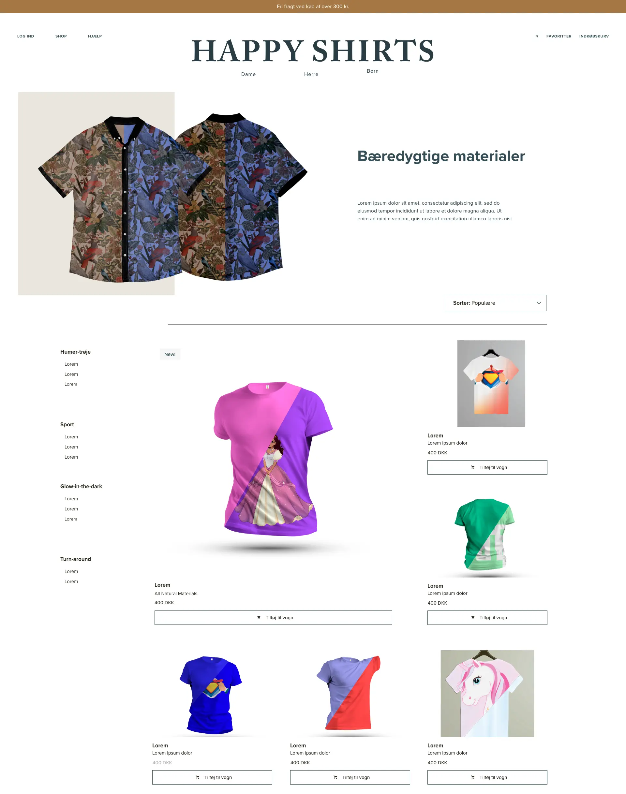

03_ux

User experience
I tema 3 lærte vi om ui- og ux-metoder, responsivt layout og design og arbejde i Adobe XD. Vi lærte fundamenterne indenfor udvikling af et site.
Det gjorde vi med metoder som desk research, interviews, surveys, sketching m.m. Vi lærte om UI konventioner, prototyping og tests.
Vores temaopgave i dette emne bestod i at designe en prototype af en webshop med salg af t-shirts.
Her var min ide at designe et website med unikke produkter. Jeg tog udgangspunkt i funktionsdygtigt tøj og startede med ideudvikling og research.
Jeg fandt hurtigt frem til et unikt koncept som gik ud på at websitet solgte t-shirts med en funktion i. Jeg gik derefter videre til at teste koncept ideen af med et spørgeskema med fokus på om der var er marked for dette produkt og brugeres adfærd indenfor markedet. Da dette var kvantitativ data lavede jeg også et interview og en tænke-højt test. Derefter gik jeg videre med Lofi-HiFi løsninger i XD. Jeg udarbejdede prototypen og testede den af flere gange. Min løsning var konceptet “Happy Shirts” med tøj med funktion. I kan læse mere her. Eller se prototype her.